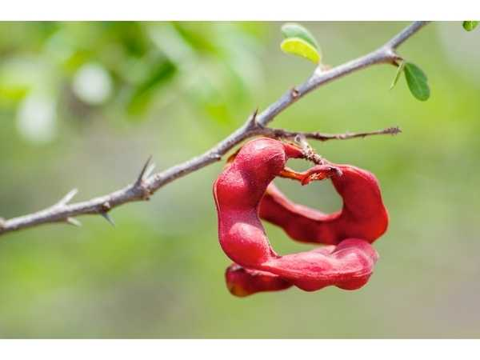

Pithecellobium dulce
Common Names: Manila Tamarind, Madras Thorn, Monkeypod, Camachile
Local Name: Kodukkapuli (Tamil), Jungle Jalebi (Hindi), Seema Chintakaya (Telugu)
Family: Fabaceae
Origin: Mexico, Central America, Northern South America
Plant Type: Perennial evergreen to semi-deciduous tree
Variety: White-pulped and pink/red-pulped varieties
Average Lifespan: 50–80 years
| Growth Habit | Medium to large thorny tree with spreading irregular canopy |
| Plant Size | 10–18 meters tall; wide spreading crown |
| Leaves | Bipinnate with 2 pairs of leaflets per pinna; each leaflet 2–4 cm, oblong |
| Flowers | Small, greenish-white, fragrant, in dense globular heads 1 cm across |
| Flower Characteristics | Numerous stamens give puffball appearance; sweetly fragrant; attract bees |
| Fruit | Coiled pod, 10–15 cm long, spirally twisted, containing sweet edible pulp around seeds |
| Fruit Color | Green pods turning pink-red when ripe; pulp white or pink |
| Seed Characteristics | Shiny black seeds, 6–10 per pod, surrounded by sweet aril |
| Root System | Deep taproot with extensive lateral roots; nitrogen-fixing nodules |
| Climate | Tropical to arid; extremely drought-tolerant; frost-sensitive when young |
| Temperature Range | 20–40°C; tolerates extreme heat; mature trees survive brief frost |
| Rainfall Requirement | 500–2500 mm annually; thrives even in semi-arid conditions |
| Soil Type | Highly adaptable; grows in poor, rocky, sandy, and alkaline soils |
| Soil pH Preference | 5.5–8.5 (very adaptable) |
| Sun Requirement | Full sun |
| Spacing | 6–10 meters between trees; also used as hedge |
| Irrigation Method | Rain-fed in most areas; minimal irrigation needed |
| Water Requirement | Very low; extremely drought-tolerant once established |
| Can it Grow in Pots? | Not recommended — grows too large and has thorns |
| Fertilizer Schedule | Minimal; once or twice yearly is sufficient |
| Recommended Organic Fertilizers | Compost, wood ash; nitrogen-fixing roots reduce fertilizer needs |
| Pesticide Frequency | Rarely needed; very hardy species |
| Recommended Organic Pesticides | Neem oil if scale insects appear |
| Mulching Practice | Optional; self-mulching from leaf litter |
| Training System | Can be trained as hedge or allowed to grow as shade tree |
| Pruning Time | Any time; responds well to heavy pruning |
| How to Prune | Prune to control size and remove thorny lower branches; excellent coppicing ability |
| Common Pests | Psyllids, scale insects, pod borers (minimal) |
| Common Diseases | Generally disease-free; occasional leaf spot |
| Disease Prevention & Remedies | Rarely needed; naturally resistant to most diseases |
| Flowering Months | October–January (India) |
| Fruiting Season | February–May; pods ripen progressively |
| Days to Harvest | 90–120 days from flowering |
| Harvest Indicators | Pods turn pink-red, begin to split open revealing sweet pulp |
| Average Yield per Plant | 50–100 kg of pods per tree per year |
| Pollination Type | Insect pollination (bees, butterflies) |
| Pollination Notes | Fragrant flowers attract many pollinators; self-fertile |
| Pollination Details | Self-fertile; bees and butterflies are primary pollinators |
| Propagation by Seeds | Seeds germinate in 1–2 weeks; scarification improves germination; fast-growing |
| Propagation by Cuttings | Hardwood cuttings root easily; also propagated by root suckers |
| Propagation by Grafting | Not commonly grafted; seedlings grow true and fast |
| Water Usage | Very low; one of the most drought-tolerant fruit trees |
| Soil Conservation Practices | Nitrogen-fixing roots improve soil; excellent for degraded land rehabilitation |
| Organic Practices Used | Zero-input tree; thrives without fertilizers or pesticides |
| Companion Plants | Used as shade tree for other crops; good windbreak |
| Biodiversity Benefits | Provides food for birds, bats, and monkeys; excellent shade and shelter tree |
| Commercial Production Regions | India (Tamil Nadu, Andhra Pradesh), Philippines, Mexico, Central America |
| Market Uses | Fresh fruit (street food), fodder, fuelwood, shade tree |
| Processing Uses | Beverages, seed oil extraction, tannin from bark |
| Market Value (Approx.) | ₹20–60 per kg (India); commonly sold as street food |
| Symbolism | Common roadside and village tree in South India; associated with childhood memories |
| Traditional Uses | Fruit eaten fresh as snack; bark used in traditional medicine for dysentery; leaves used as fodder |
| Calories | 78 kcal per 100g |
| Dietary Fiber | 1.2 g per 100g |
| Vitamin C | 133 mg per 100g (very high) |
| Vitamin A | Trace amounts |
| Iron | 0.5 mg per 100g |
| Potassium | 222 mg per 100g |
| Antioxidants | Rich in polyphenols, flavonoids, tannins |
| Other Key Nutrients | Protein (3g/100g), calcium, phosphorus, thiamine |
| Anxiety & Sleep | Not a primary use |
| Immune Support | Very high vitamin C content strongly supports immunity |
| Anti-inflammatory Properties | Bark and leaf extracts show anti-inflammatory activity |
| Heart Health | Potassium and antioxidants support cardiovascular health |
| Digestive Health | Bark decoction used for dysentery and diarrhoea in traditional medicine |
Disclaimer: Information provided is for educational purposes only and not a substitute for medical advice.
Add your field observations here.